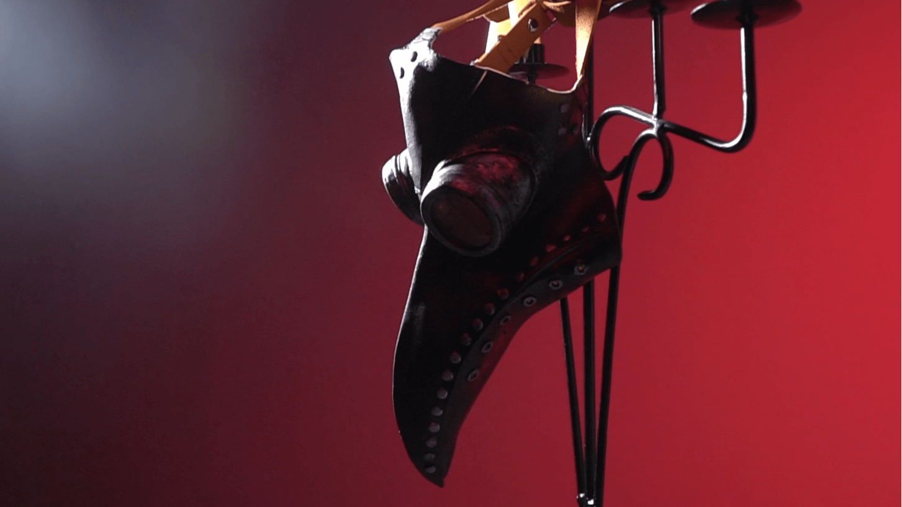
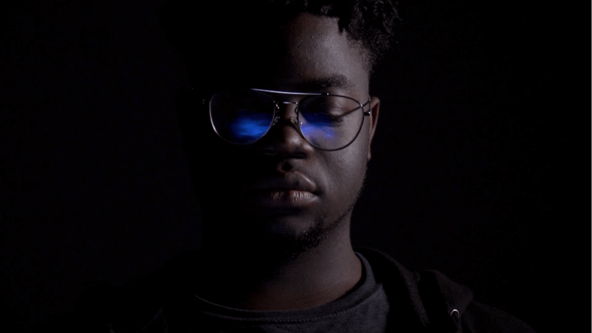
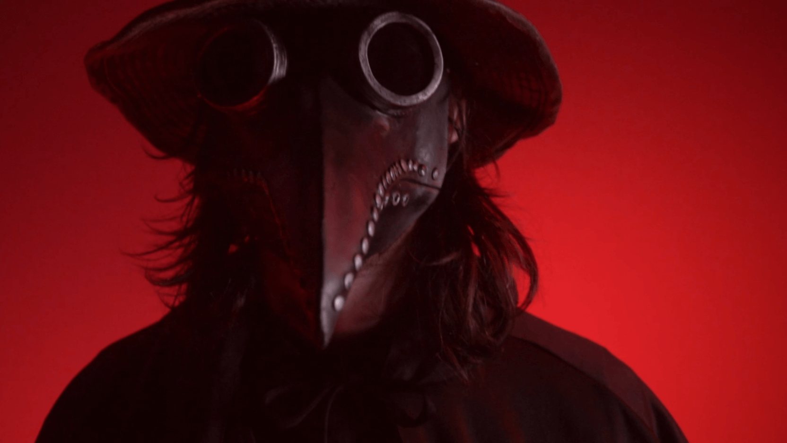
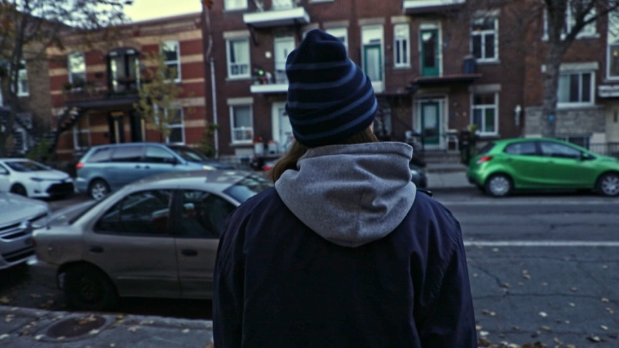

Cliquer pour regarder
Vidéographie
(1/21)
Le court-métrage "il" avait pour but de montrer les effets que l'isolation pouvait avoir sur un être humain lorsque poussé à l'extrême. Les outils présents dans Davinci ont été grandement utile pour le montage visuel, mais aussi sonore malgré le fait que FL Studio était l'outil principale utilisé pour la composition musicale. Dans une des premières itérations de ce projet, la bande sonore avait pour but d'exprimer une colère ardente intérieure, mais l'équipe a finalement décidé d'opter pour une musique simple, calme, sinistre pour mieux communiquer la solitude vécue par ces personnes.
Ancienne bande sonoreImages4 photos



